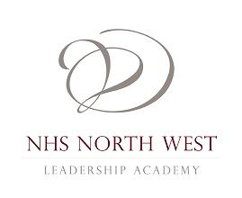

|

|
Welcome to the NHS North West Leadership Academy
|
Getting Started
-
 User Guide.pdf
User Guide.pdf
- Download the User Guide
-
Sample Questionnaire.pdf
- Download the Sample Questionnaire
-
 info@nwacademy.nhs.uk
info@nwacademy.nhs.uk
- E-mail your Talent Studio questions to the above address